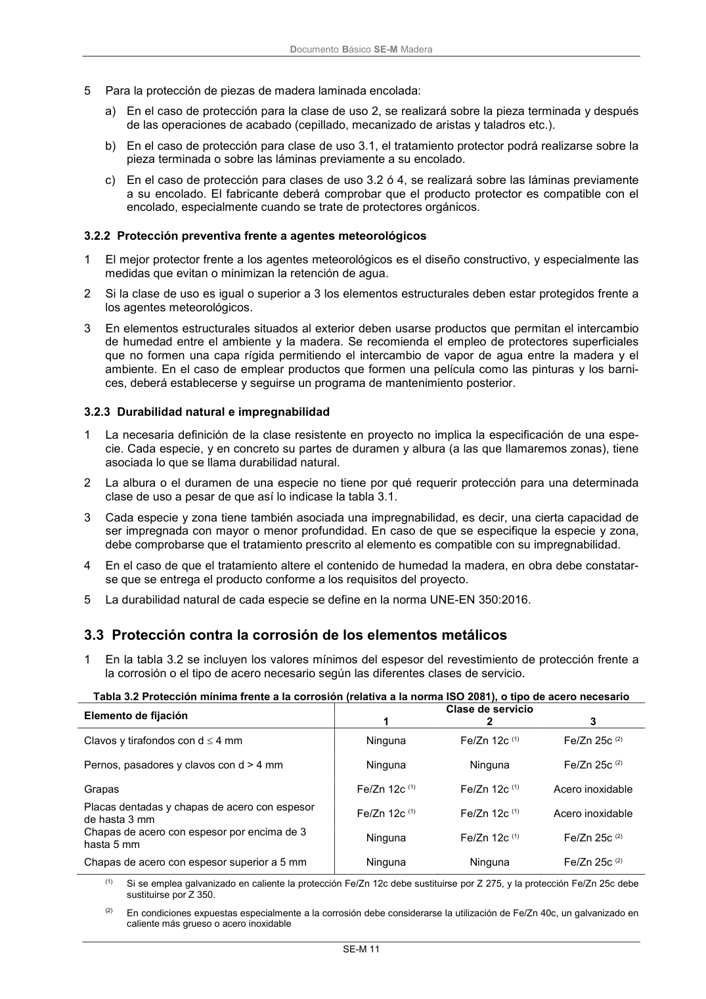

DB-SE-M Madera · edición 2019-12-20 · capa oficial
Documento DB-SE-M-oficial · SHA-256 del PDF 26b5819839ebfda78b0b119c5e76a0a37773b0d763c05688541870075df93718
Copia fiel del PDF fuente · Fuente oficial
Ficha de la disposición en la fuente oficial
Formatos: JSON del segmento · Markdown
3.3 Protección contra la corrosión de los elementos metálicos 1 En la tabla 3.2 se incluyen los valoresmínimos del espesor del revestimiento de protección frente a la corrosión o el tipo de acero necesario según las diferentes clases de servicio. Tabla 3.2 Protección mínima frente a la corrosión (relativa a la norma ISO 2081), o tipo de acero necesario Elemento de fijación Clase de servicio 1 2 3 Clavos y tirafondos con d 4 mm Ninguna Fe/Zn 12c (1) Fe/Zn 25c (2) Pernos, pasadores y clavos con d > 4 mm Ninguna Ninguna Fe/Zn 25c (2) Grapas Fe/Zn 12c (1) Fe/Zn 12c (1) Acero inoxidable Placas dentadas y chapas de acero con espesor de hasta 3 mm Fe/Zn 12c (1) Fe/Zn 12c (1) Acero inoxidable Chapas de acero con espesor por encima de 3 hasta 5 mm Ninguna Fe/Zn 12c (1) Fe/Zn 25c (2) Chapas de acero con espesor superior a 5 mm Ninguna Ninguna Fe/Zn 25c (2) (1) Si se emplea galvanizado en caliente la protección Fe/Zn 12c debe sustituirse por Z 275, y la protección Fe/Zn 25c debe sustituirse por Z 350. (2) En condiciones expuestas especialmente a la corrosión debe considerarse la utilización de Fe/Zn 40c, un galvanizado en caliente más grueso o acero inoxidable DocumentoBásico SE-M Madera SE-M 12
